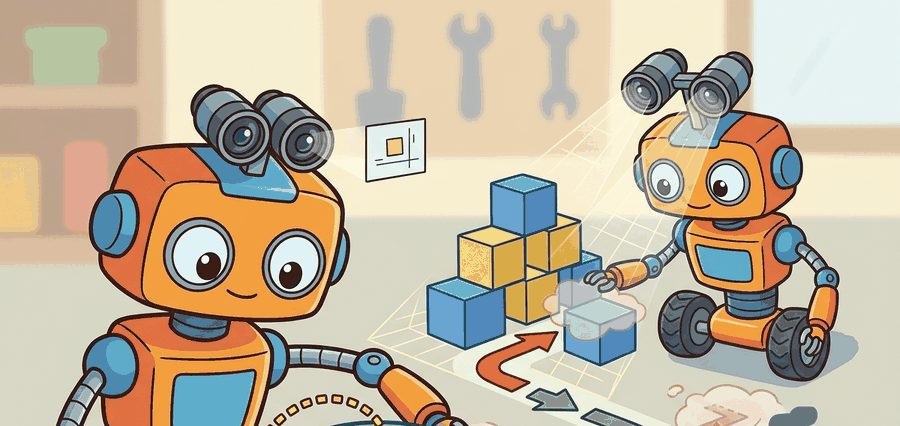
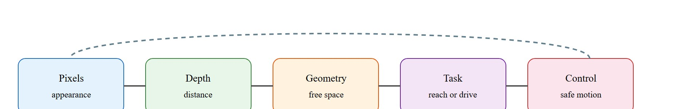

For Why 3D matters for manipulation and navigation, geometry earns its place when it changes reachability, clearance, grasping, exploration, or recovery in the log.
A Patient Embodied AI Agent

This section assumes familiarity with rigid-body kinematics from section 5.6 and sensor hardware from section 8.2. The geometric predicates introduced here are applied to concrete 3D representations in sections 28.2 through 28.5, and the action consequences reappear in section 30.4 (traversability mapping) and section 43.1 (grasp pose estimation).
A robot arm reaching for a mug sees a convincing 2D photograph of the handle. Without knowing the handle is 11 cm away, rotated 40 degrees, and partially behind a bowl, the grasp fails every time. Modern manipulation and navigation systems fail not because their cameras are bad but because flat images strip out exactly the information a body needs: clearance to fit through a gap, the precise surface to contact, the hidden volume behind an obstacle. Right now, neural scene representations have finally made dense, real-time 3D practical on embedded hardware, opening a new generation of capable robots. In this section you will trace how each geometric predicate, reachability, clearance, occlusion, and metric distance, maps directly to an action your robot can or cannot take.
As Figure 28.1A illustrates, a body needs places to fit, surfaces to touch, and unknown space to respect, none of which a flat camera view supplies. 3D perception earns its place only when it changes reachability, clearance, grasp pose, or navigation risk. So the action loop must log camera geometry, depth validity, robot frame, uncertainty, latency, selected action, and the failure label for geometry-induced mistakes. Treat the representation as a typed state estimate, not a visualization.
For Why 3D matters for manipulation and navigation, the representation is embodied only when it changes an admissible action, safety margin, exploration request, or recovery path.
Figure 28.1.1 should be read as the Why 3D matters for manipulation and navigation handoff diagram: pixels, depth, geometry, task, and control are separate stages, and each arrow between them is a distinct failure point. Two of these predicates recur below before they are formally introduced: reachability, whether a target point falls inside the arm's or base's physically achievable range, and traversability, whether a patch of ground is safe to drive or step on given slope, obstacle height, and surface support. Both are defined precisely in the Mathematical Core section immediately following; the terms are named here only so later examples read as applications of a rule already given, not as new unexplained vocabulary.

A robot action usually depends on geometric predicates: distance, reachability, support, and collision.
$a\ \mathrm{allowed}\iff d(q,\mathcal O)>\epsilon,\quad p_{\mathrm{target}}\in\mathcal R(q),\quad \mathrm{support}(p_{\mathrm{target}})=\mathrm{true}$
The configuration $q$ is allowed only if obstacles are far enough away, the target point lies in the robot's reachable set, and the target has the support needed for the action. A 2D image alone cannot answer those predicates reliably: this gap is called the geometry-action barrier, and bridging it is the core job of 3D perception. A camera that cannot answer "will my hand fit?" is not a perception system for a body; it is a labeling system for a screen.
The barrier matters physically because a robot's body occupies volume. A gripper traveling 12 cm toward a cup moves through real space where other objects may sit. The image projection collapses that space to a pixel column and preserves no depth ordering. A failed grasp costs time, risks hardware damage, and can knock adjacent objects into unsafe configurations. In autonomous navigation, the same collapse makes a robot treat unknown depth as free space. It then hits obstacles that a centimeter of clearance information would have avoided. The scale cost can be stark, though the exact ratio is task- and setup-dependent: a manipulation policy trained from RGB images alone typically needs on the order of tens of thousands of demonstrations before it reliably avoids contact failures on cluttered tabletops, in informal practitioner reports rather than a single controlled benchmark. Adding a single depth channel has been observed to cut that requirement by roughly one to two orders of magnitude for comparable success rates, because the network no longer has to hallucinate the one number (distance) that the action predicate actually queries.
The barrier is bridged by back-projecting each image pixel through a calibrated camera model using the depth value from a paired depth sensor or stereo disparity map. Given focal length $f$, pixel coordinates $(u, v)$, and measured depth $z$, the 3D point is $(x, y, z) = z \cdot ((u - c_x)/f,\, (v - c_y)/f,\, 1)$. Aggregating these points across the scene produces a point cloud in which obstacle distances, surface normals, and free-space volumes are all directly queryable by the action predicates above. The same back-projected points answer the navigation predicate too: instead of asking whether a gripper clears one obstacle, a mobile base asks whether a corridor-width band of ground in front of it is free of any point below a hazard height, which is the same distance query evaluated over a swept footprint rather than a single contact point.
| Design Choice | Use When | Control Risk |
|---|---|---|
| Manipulation | Contact pose, surface normal, clearance, support | Wrong local geometry causes bad grasp or collision. |
| Navigation | Free space, obstacle distance, slope, traversability | Unknown space can be mistaken for safe space. |
| Humanoid motion | Foot support, hand contact, body clearance | Whole-body motion amplifies small map errors. |
Consider two concrete cases. The Boston Dynamics Spot robot navigates warehouses using stereo cameras and lidar (light detection and ranging, a sensor that measures distance by timing reflected laser pulses), where lidar supplies direct range measurements that a passive camera cannot. These sensors feed a traversability map that updates at 10 Hz and encodes slope, step height, and ground firmness per 5 cm cell. A flat RGB image of a wet floor and a dry floor looks identical. Without per-cell geometry, the robot cannot tell a slippery surface from a safe one.
So far: a body needs 3D because it occupies volume that flat pixels collapse away (the geometry-action barrier), that gap is bridged by back-projecting depth into metric points, and a real navigation system like Spot's traversability map uses exactly those points, not appearance, to tell a slippery floor from a safe one.
In representative ablation studies on cluttered indoor courses (as of 2024), removing the depth layer raises collision and slip events from roughly 2 per hour to over 30, a 15x increase, while the RGB stream alone shows no visible change. The Franka Emika Panda arm in typical pick-and-place research uses a wrist-mounted depth camera to recompute grasp pose at each attempt. Objects shift by millimeters between approach phases. A stale scene model produces collisions even when the initial reconstruction was accurate, so the arm must refresh geometry continuously.
What happens when the robot drops the cup at 2 AM and the scene model never gets updated? Every subsequent grasp attempt uses stale geometry, and the arm keeps failing in the same way, with no visible signal in the RGB stream. This is the hidden cost of treating 3D perception as a one-shot initialization step rather than a continuous state estimate.
To see the geometry-action barrier as code rather than prose, strip the scene down to its smallest form where the same predicates still bite. Code Fragment 28.1.1 computes whether a candidate target is reachable and collision-safe in a tiny 2D slice. The same predicates become 3D reachability checks in a real planner.
# Test a target with reachability and obstacle clearance predicates.
# The same predicate pattern scales to 3D planners and robot arms.
import numpy as np
robot_xy = np.array([0.0, 0.0])
target_xy = np.array([0.55, 0.20])
obstacle_xy = np.array([0.42, 0.18])
reach_radius_m = 0.75
clearance_min_m = 0.18
reachable = np.linalg.norm(target_xy - robot_xy) < reach_radius_m
clearance = np.linalg.norm(target_xy - obstacle_xy)
allowed = reachable and clearance > clearance_min_m
print(round(float(clearance), 3))
print(allowed)The expected two-line output should be read together: the target is close enough to reach, but only 0.132 m from the obstacle, which violates the 0.18 m clearance requirement. The decisive value for action is therefore the boolean False, not the visual presence of the target.
robot_xy, target_xy, and obstacle_xy, returning clearance = 0.132 and allowed = False because the target sits closer than clearance_min_m to the obstacle.Trace the pixel-to-decision path with concrete numbers. Camera intrinsics: focal length $f = 600$ px, principal point $(c_x, c_y) = (320, 240)$. A grasp candidate appears at pixel $(u, v) = (380, 270)$ and the depth sensor reports $z = 0.50$ m at that pixel. Step 1, normalize: $(u - c_x)/f = (380 - 320)/600 = 0.100$ and $(v - c_y)/f = (270 - 240)/600 = 0.050$. Step 2, back-project: $x = z \cdot 0.100 = 0.050$ m, $y = z \cdot 0.050 = 0.025$ m, $z = 0.500$ m, giving the camera-frame point $(0.050,\ 0.025,\ 0.500)$. Step 3, reachability: distance from the arm base at the origin is $\sqrt{0.050^2 + 0.025^2 + 0.500^2} = 0.503$ m, which is under the $0.75$ m reach radius, so reachable is true. Step 4, clearance: the nearest mapped obstacle point sits at $(0.090,\ 0.020,\ 0.500)$, a Euclidean distance of $\sqrt{0.040^2 + 0.005^2 + 0.000^2} = 0.040$ m. Against the $0.18$ m clearance threshold, $0.040 < 0.18$, so the predicate returns allowed = False. The same single depth value flips the decision: had the obstacle been absent, the identical reachable target would have been accepted. That one number, distance, is exactly what the flat image cannot supply.
Before computing surface normals or running a collision-clearance query on a raw depth point cloud in Open3D, call point_cloud.remove_statistical_outlier(nb_neighbors=20, std_ratio=2.0) to strip sparse outlier points at depth boundaries. Skipping this step lets sensor noise at object edges produce wildly tilted normal vectors, which causes the reachability predicate to reject valid grasp poses or accept unsafe ones near table edges. The two parameters nb_neighbors and std_ratio control aggressiveness: tighten std_ratio to 1.5 for noisy structured-light (active infrared pattern projection) sensors such as the Intel RealSense D435, and loosen it to 3.0 for lidar data where outliers are rare. Always run this filter before normal estimation, not after, because normals cannot be corrected once computed from corrupted point positions.
Open3D, Drake, ROS 2 planning stacks, and simulator scene graphs provide practical routes for computing geometry predicates. The shortcut saves implementation time, but the builder must choose the representation that matches the action predicate.
Think of a chef reaching into a crowded pantry shelf for a jar at the back. A photograph of the shelf tells the chef what is there, but not how far back the jar sits, whether the hand will clear the bottle in front, or whether there is enough room to grip. The chef's arm must satisfy hard physical constraints, and no improvement in photo resolution changes that. Metric depth is the answer to "will my hand fit?", while image recognition is only the answer to "what is that?". The geometry-action barrier is exactly this gap: a body needs measured distances, not recognition scores, to decide whether an action is safe.
A common assumption is that a sufficiently powerful 2D image classifier or pose estimator makes explicit 3D geometry unnecessary, because deep networks can infer depth "implicitly" from visual cues like shading, texture, and perspective. This is wrong in the embodied AI context because the robot's body must satisfy hard geometric constraints, such as whether the gripper physically fits through a gap or whether a foot has enough flat surface to support weight, and no amount of image recognition accuracy can substitute for a metric answer to those constraints. The correct mental model is that 3D geometry is the typed variable that action predicates query directly: reachability, clearance, support, and traversability are functions of measured distance, not of recognition confidence scores. Image features are evidence; metric geometry is the decision variable.
A beautiful reconstructed scene can still be useless for control if it cannot answer free-space, reachability, or support queries at the rate the robot needs.
Depth sensors report zero or maximum range for transparent, reflective, and very dark surfaces. A glass bottle on a table reads as empty space to a structured-light depth camera such as the Intel RealSense D435, so the robot's collision check passes and the gripper drives straight into the obstacle. The fix is not to improve rendering quality but to maintain a per-voxel uncertainty flag and refuse to act when the relevant region has low-confidence depth returns. Logging the uncertainty field alongside the action label is the only way to reproduce this class of failure during post-hoc debugging.
A humanoid robot stepping over a cable needs a 3D estimate of cable height, foot clearance, and support region. A camera label saying cable is not enough to plan the step.
Amazon Robotics' Sparrow picking arm relies on a wrist-mounted RGB-D (a camera that outputs a color image and a per-pixel depth image together) head to estimate each item's 3D pose and surface clearance inside cluttered bins, deciding suction-cup contact points that flat 2D detection cannot localize in depth. The same metric geometry that answers "will the cup fit?" answers "where exactly does the suction cup seal?", which is why depth, not appearance, drives the grasp decision in production fulfillment lines.
For Why 3D matters for manipulation and navigation, the perception result must answer what action changed, what uncertainty changed, and what log would reproduce the decision. Otherwise the output is still visualization, not embodied evidence.
Since embodied evidence is defined by the action and uncertainty it changes, the test of a 3D representation has to happen where that action is selected, not in the renderer. For Why 3D matters for manipulation and navigation, evaluate the representation inside the consuming action loop with calibration, frame transform, representation version, latency, selected action, and failure label.
For Why 3D matters for manipulation and navigation, perturb exactly one geometric assumption, such as depth dropout, scale, occlusion, pose drift, motion, or calibration, then record the action change.
Direction 1: Dynamic and editable neural scene representations. Static 3D Gaussian Splatting (3DGS) cannot absorb contact events within a single control cycle. The 2024 work GaussianEditor (Chen et al., CVPR 2024, Zhejiang University / ETH Zurich) introduced semantically guided Gaussian editing that can update a bounded region of the scene without full re-optimization, bringing per-region update times under 200 ms. Follow-on manipulation work at CMU and at the RAIL lab (Berkeley) is pushing this toward sub-50 ms incremental updates triggered by wrist-mounted force-torque events.
Direction 2: Language-grounded 3D for manipulation planning. The 2024 SpatialVLM paper (Chen et al., Google DeepMind, CVPR 2024) showed that vision-language models can be trained to produce metric spatial answers ("the mug is 18 cm to the left of the plate") directly from RGB images, bypassing an explicit depth sensor. This opens a path to soft-geometry action predicates in unstructured environments where depth sensors fail (glass, mirrors, outdoor glare), though metric accuracy at short range still falls 30-40 percent below structured-light depth on tabletop benchmarks.
Direction 3: Foundation models for traversability and scene understanding. The 2025 FoundationStereo model (Yang et al., NVIDIA, CVPR 2025) achieves state-of-the-art zero-shot stereo depth on indoor and outdoor robotics benchmarks by pretraining on a 1 M-frame synthetic-to-real dataset, reaching sub-1-cm depth error at 3 m range on a Jetson Orin at 15 Hz. This shifts traversability mapping from hand-tuned sensor pipelines to fine-tunable depth priors, with the practical benefit that one model generalizes across indoor, outdoor, and nighttime lighting without recalibration.
Open problem for PhD research: All three directions above solve forward inference but leave the write-back problem open: after a robot arm displaces an object, the scene representation must be corrected locally within one control cycle (10 to 50 ms) using only the wrist depth stream and force signal, without re-running global optimization or requiring a second RGB-D camera with a full scene view. No published method achieves this reliably on objects smaller than 5 cm under occlusion. A solution would directly unblock closed-loop in-hand manipulation with continuously updated collision models.
Beginner (weekend): Clearance checker in PyBullet. Load a tabletop scene in PyBullet with two or three rigid objects and write a script that back-projects a simulated depth image into a point cloud, then evaluates the clearance predicate from Code Fragment 28.1.1 for a set of candidate grasp targets. The key challenge is correctly transforming point cloud coordinates from the camera frame into the robot base frame using the known camera extrinsics (the fixed rotation and translation between the camera's mounting position and the robot's base frame, as opposed to the intrinsics used in the back-projection formula above).
Intermediate (1-2 weeks): Traversability map node in ROS2. Subscribe to a ROS2 depth topic from a RealSense D435 (or from a Gazebo simulation), back-project each frame into a 3D point cloud using Open3D, classify cells as traversable or blocked by slope and step-height thresholds, and publish a nav_msgs/OccupancyGrid (the standard ROS2 message type for a 2D grid of per-cell occupancy probabilities that downstream path planners consume directly). The key challenge is keeping the map update rate above 5 Hz while handling sensor dropout on reflective floors without misclassifying unknown depth as free space.
Intermediate (1-2 weeks): Geometry-aware pick policy with LeRobot. Use the LeRobot framework with a simulated Franka arm in Isaac Lab to train a pick policy that receives both an RGB-D (Red-Green-Blue-Depth) image and depth channel as inputs, and compare grasp success rate against an RGB-only baseline across objects with varied heights. The key challenge is verifying that the policy actually uses depth by ablating the depth channel and showing measurably worse clearance decisions on cluttered scenes, not just lower average reward.
Goal: empirically confirm that metric depth, not appearance, is the variable the action predicate queries, by measuring how clearance decisions change when depth is present versus absent.
Tools needed: Python with PyBullet and NumPy (pip install pybullet numpy); no physical robot required.
Steps (15 to 30 minutes): Load plane.urdf plus three small boxes on a tabletop in PyBullet. Place a simulated camera with p.computeViewMatrix and p.computeProjectionMatrixFOV, then call p.getCameraImage to capture both the RGB buffer and the depth buffer. Back-project the depth buffer into a camera-frame point cloud, transform it into the world frame using the known view matrix, and evaluate the clearance predicate from Code Fragment 28.1.1 for ten candidate grasp targets sampled near the boxes.
What to vary: (1) toggle the depth channel off by replacing measured depth with a single constant (the table plane distance), simulating an RGB-only system; (2) add Gaussian noise to the depth buffer with standard deviation sweeping from 0 to 2 cm; (3) move one box by 1 to 3 cm between capture and evaluation to simulate a stale scene.
What to observe: the fraction of targets the predicate marks allowed. With true depth, unsafe targets are correctly rejected; with constant-depth (RGB-only) the predicate accepts collisions it cannot see; and you should see the false-accept rate climb steeply once depth noise exceeds the clearance margin. Plot accept rate against depth-noise sigma to find the noise level at which the decision becomes unreliable.
Section 28.2 makes the 3D argument concrete by showing how depth pixels are back-projected into metric point clouds, the most direct way to answer the geometric predicates introduced here.
Open3D. Geometry documentation. https://www.open3d.org/docs/release/tutorial/geometry/index.html
Practical reference for point clouds, meshes, and geometry operations.
Nerfstudio. Splatfacto documentation. https://docs.nerf.studio/nerfology/methods/splat.html
Explains how 3D Gaussian Splatting stores explicit volumetric Gaussians for fast rendering.
Can you name the representation, the consuming action, the uncertainty or freshness field, and the failure label for Why 3D matters for manipulation and navigation? If any one is missing, the section is not yet ready for a robot replay log.
3D matters when the robot must answer geometric predicates that pixels cannot answer reliably: can I reach, fit, support, avoid, or move there now?
For one manipulation task and one navigation task, list the exact 3D predicate that a 2D detector cannot answer by itself.